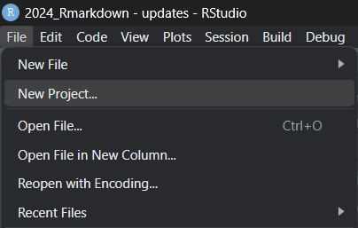
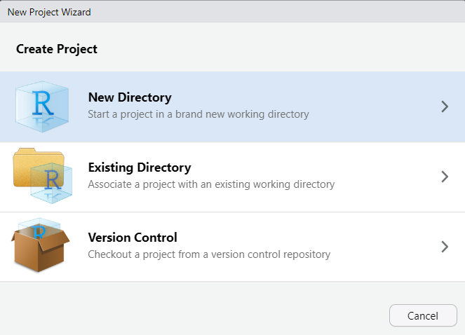
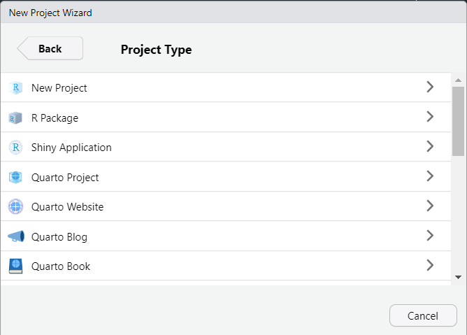
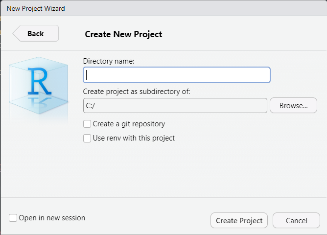
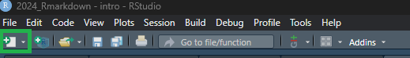
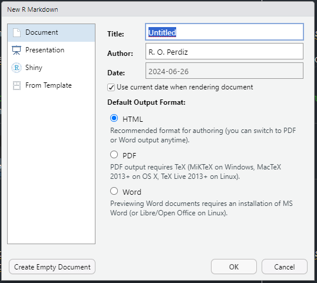
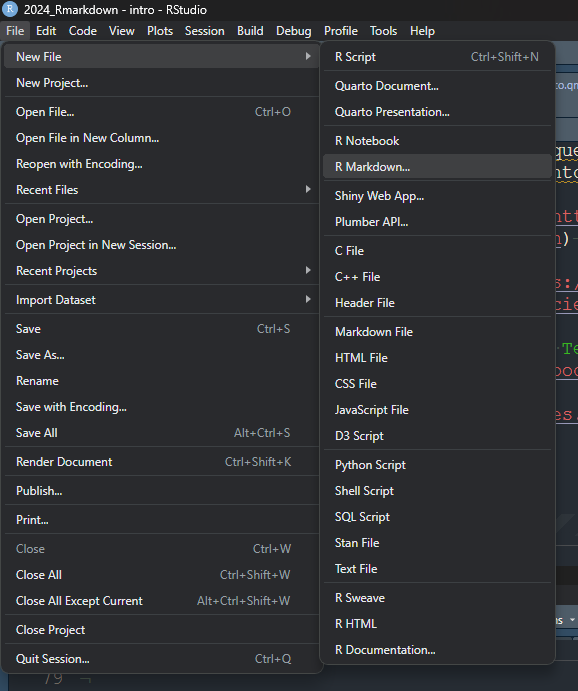
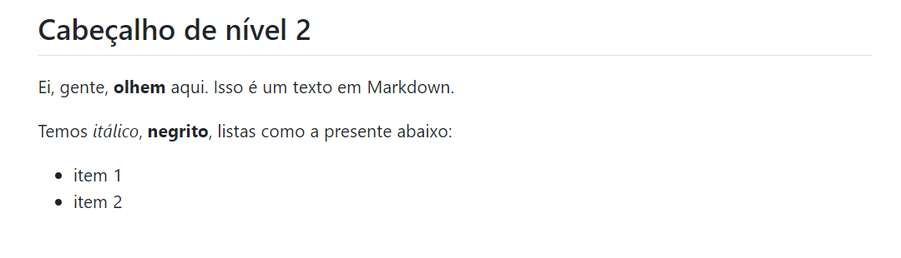

---
title: "Análise exploratória de dados - iris"
author: "Euzinho Euzo Euzão"
date: "15 Maio 2024"
---
```{r, include=FALSE}
# estafuncao checa se os pacotes em `lista_de_pacotes` estao instalados no seu computador; se nao estiverem, a funcao vai instalar para vc
lista_de_pacotes <- c("ggplot2")
pacote_nao_instalado <- lista_de_pacotes[!(lista_de_pacotes %in% installed.packages()[,"Package"])]
if(length(pacote_nao_instalado)) {install.packages(pacote_nao_instalado)}
```
## Análise exploratória de dados
Vou analisar o conjunto de dados chamado `iris`.
```{r, echo=FALSE}
head(iris, 5)
```
Aqui escrevo mais texto sobre meu conjunto de dados.
### Gráficos
```{r, echo=TRUE}
library("ggplot2")
iris |>
ggplot(aes(Sepal.Length, Sepal.Width)) +
geom_point()
```
## Colocarei uma figura localizada em outra pasta
Usarei o caminho relativo.
Conceitos básicos
Objetivos de aprendizado
- Conhecer o que é Rmd e como ele se diferencia do Markdown simples;
- Entender as vantagens de usar Rmd para relatórios reprodutíveis e documentos dinâmicos;
- Identificar e compreender a estrutura básica de um arquivo Rmd, incluindo o cabeçalho YAML, os pedaços de código, e o corpo do documento;
- Saber como configurar o cabeçalho YAML para definir parâmetros como título, autor, data e formato de saída (HTML, PDF, Word, etc.);
- Aprender a inserir e configurar pedaços de código dentro do documento Rmd;
- Entender como executar código dentro de um documento Rmd e como controlar a saída desses códigos (exibição de código, resultados, gráficos, etc.).
O que é Markdown?
Markdown é uma linguagem de marcação projetada para ser simples e fácil de ler e escrever em texto puro. Uma linguagem de marcação não é uma linguagem de programação. A linguagem Markdown foi criada por John Gruber em 2004 com a colaboração de Aaron Swartz. O objetivo do Markdown é permitir que escritores criem conteúdo rico em formatação, sem precisar usar linguagens mais complexas, como encontradas na linguagem HTML, por exemplo.
O que é Rmarkdown?
Esse tipo de documento foi introduzido inicialmente no pacote knitr (Xie 2014, 2015, 2025) no ano de 2012. A idéia era superar as limitações do Sweave, uma ferramenta que permite a integração de código R com documentos LaTeX. Em seu desenho, o Rmd (apesar de possuir o R no nome) foi pensado em ser livre para mesclar qualquer linguagem de programação com texto, isto é, uma implementação moderna e prática da filosofia de programação letrada (em inglês, literate programming). A programação letrada foi introduzida por Donald Knuth em 1984 e consiste em combinar código e documentação em um único documento para criar relatórios que são compreensíveis tanto para humanos quanto para máquinas. Trata-se de escrever programas que são explicados em linguagem natural, acompanhados pelo código-fonte. A idéia é que a lógica e a intenção por trás do código sejam claramente comunicadas.
Para que serve o Rmd?
O Rmd é utilizado para uma variedade de finalidades, incluindo:
- produção de relatórios reprodutíveis, que podem ser facilmente reproduzidos, facilitando a transparência e a replicabilidade das análises;
- documentação de análises de dados, incluindo a explicação do raciocínio por trás das decisões analíticas;
- apresentações dinâmicas, em que se mesclam texto, imagens, e código, permitindo a criação de apresentações dinâmicas que incorporam análises de dados em tempo real;
- geração de documentos variados, que abrangem PDFs, páginas da internet em formato HTML, apresentações de slides e até mesmo livros eletrônicos. –>
Dica
Arquivos Markdown apresentam extensão .md. Arquivos Rmarkdown apresentam extensão .Rmd. Caso você use SO Windows e não consiga ver a extensão de cada arquivo, isto é, o formato do arquivo, sugiro que siga este tutorial para habilitar esta função em seu computador. Isso ajuda no entendimento dos diferentes tipos de arquivos que lidaremos nesse curso.
Exemplos de produtos gerados com Rmarkdown
Há uma infinidade de exemplos de produtos que foram gerados utilizando o Rmarkdown. Listo abaixo alguns exemplos, colocando tanto o produto quanto o código fonte.
Dica de organização - criar projeto no RStudio
Antes de começar a brincar com os arquivos Rmd e testar as possibilidades, eu sugiro fortemente que vocês criem um projeto no RStudio.
Criar um projeto no RStudio é escolher uma pasta para depositar todos seus arquivos ali e facilitar a busca desses arquivos, tanto por você, usuário, quanto pelo R, que será utilizado pelo RStudio para compilar os arquivos Rmd nos diferentes produtos que você desejar.
Portanto, siga os passos abaixo para criar um projeto no RStudio:
Abra o RStudio.
Clique em
File -> New Project...(Figura 2.3)

File do RStudio.
- Selecione a opção New Directory para criar uma nova pasta para conter seu projeto (Figura 2.2).

- Em seguida, escolha a opção New Project (Figura 2.3).

- Por fim, coloque o nome da sua nova pasta contendo o projeto RStudio dentro da opção Directory Name. E na opção inferior, nomeada Create project as subdirectory of:, escolha por meio do botão Browser a pasta mãe que abrigará a pasta contendo seu projeto (Figura 2.4).

Ao finalizar essas etapas, o RStudio criará um arquivo de sufixo .Rproj dentro da pasta que você criou. Ao clicar duas vezes nesse arquivo, o RStudio se abrirá, tendo essa pasta como a de trabalho (veja aqui o que é uma pasta de trabalho no R) na sua sessão.
Para finalizar, disponibilizo o vídeo abaixo, feito pelo perfil do YouTube Epidemio Fora da Curva, para facilitar o entendimento de vocês:
Como criar um arquivo .Rmd
A primeira maneira de criar um arquivo Rmarkdown é apertar o botão de criar arquivos presente no lado superior esquerdo do RStudio (Figura 2.5). Ao clicar neste botão, opções de arquivos são listadas, entre as quais se inclui o Rmarkdown.

Ao selecionar a opção “Rmarkdown”, uma tela se abre demandando que se coloque o título do arquivo, autor, e data. Também se solicita o tipo de arquivo final desejado: HTML, PDF, ou Word (Figura 2.6).

Uma outra maneira de criar um arquivo Rmarkdown é pelo menu de entrada. Selecionam-se as opções File -> New File -> Rmarkdown ... (Figura 2.7) para iniciar um novo arquivo e a tela apresentada na Figura 2.6 aparecer novamente.

File -> New File -> Rmarkdown ...).
Estrutura de um documento Rmd
Um arquivo Rmd é composto por três tipos principais de elementos:
Metadados: também conhecido como cabeçalho YAML, este é um bloco de metadados no início do arquivo que fornece informações sobre o documento, como título, autor e formato de saída desejado.
Texto formatado: texto normal que pode incluir formatação com Markdown para criar títulos, listas, links, entre outros.
Pedaço de código: são blocos de código delimitados por três crases (```). Esses blocos de código podem ser executados e os resultados são incorporados ao documento final.
YAML
---
title: "Análise exploratória de dados - iris"
author: "Euzinho Euzo Euzão"
date: "15 Maio 2024"
---YAML1 se refere ao conjunto de metadados que identifica o documento, e é o responsável pelas configurações do documento. Nesta parte, informamos o título do documento, a data de criação, o nome do autor e o tipo de produto que desejamos. No exemplo acima, definimos o produto como html_document. Caso quiséssemos um arquivo no formato .docx (ou Word), o output deveria ser modificado para word_document. Cada formato possui um conjunto de opções disponíveis. Nesse caso, é importante consultar a página de cada formato disponível na documentação do Rmd.
Texto
No corpo do texto, você pode escrever normalmente, utilizando a sintaxe de Markdown para incluir elementos em itálico, negrito, incluir imagens, tabelas etc. Veja o aprofundamento deste tema no capítulo “Sintaxe”.
Por exemplo, veja o texto escrito em Markdown abaixo:
## Cabeçalho de nível 2
Ei, gente, __olhem__ aqui. Isso é um texto em Markdown.
Temos *itálico*, __negrito__, listas como a presente abaixo:
+ item 1
+ item 2Se compilamos um arquivo Markdown contendo este texto, o produto final terá uma imagem como a evidenciada abaixo:

Pedaços de código
Os pedaços de código em R (code chunks) podem ser executados para gerar resultados que serão incorporados ao documento. Você pode inserir um pedaço de código manualmente manualmente ou com o atalho CTRL + ALT + I no Windows/Linux e CMD + ALT + I no MacOS. É possível incluir uma série de opções relacionadas à execução do código. Falaremos destas opções mais adiante.
```{r}
library("ggplot2")
gplot(iris$Sepal.Length, iris$Sepal.Width)
```Isso conclui nosso capítulo introdutório sobre arquivos Rmd. Nos próximos capítulos, vamos explorar a sintaxe utilizada em arquivos Rmd e tipos diferentes de produtos com o Rmd.
YAML vem do inglês YAML Ain’t Markup Language, que significa YAML não é uma linguagem de marcação.↩︎